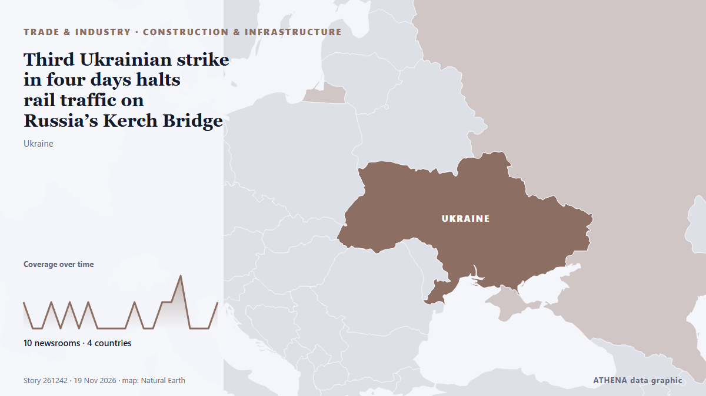

Κατασκευές & υποδομές
ΧορηγούμενοΠαρουσιάζεται από  Cybernetics and Artificial Intelligence Lab Welcome to the Cybernetics and Artificial Intelligence Laboratory, established at the Department of Business Administration of the National and Kapodistrian University of Athens. The lab is headed by Professor Dimitrios Thomakos. The lab aims to do research that can be published in top venues. Our research uses tools and methods of Artificial Intelligence, and lies in the following areas: - Forecasting - Decision making - Cyber security - Finance We are always looking forward to collaborating with exceptional students!
Cybernetics and Artificial Intelligence Lab Welcome to the Cybernetics and Artificial Intelligence Laboratory, established at the Department of Business Administration of the National and Kapodistrian University of Athens. The lab is headed by Professor Dimitrios Thomakos. The lab aims to do research that can be published in top venues. Our research uses tools and methods of Artificial Intelligence, and lies in the following areas: - Forecasting - Decision making - Cyber security - Finance We are always looking forward to collaborating with exceptional students!
| 6 Νοε | 0 |
|---|---|
| 7 Νοε | 0 |
| 8 Νοε | 0 |
| 9 Νοε | 0 |
| 10 Νοε | 0 |
| 11 Νοε | 0 |
| 12 Νοε | 0 |
| 13 Νοε | 0 |
| 14 Νοε | 0 |
| 15 Νοε | 2 |
| 16 Νοε | 5 |
| 17 Νοε | 5 |
| 18 Νοε | 3 |
| 19 Νοε | 4 |
Οι τίτλοι των ειδήσεων παρουσιάζονται στα αγγλικά, όπως δημοσιεύτηκαν.

Third Ukrainian strike in four days halts rail traffic on Russia’s Kerch Bridge
The Kerch Bridge is a key artery for military and civilian supplies to Crimea, which Moscow seized in defiance of international law in 2014. από The Irish News (Belfast)
"Just like before USSR collapsed": journalists reveal number of "frozen" construction megaprojects in Russia
An analysis by The Moscow Times finds Russia has failed to complete more than 290 state construction projects worth RUB 9.5 trillion (US$115.2 billion) since invading Ukraine, with economists drawing… από Ukrainska Pravda (English)
Killer building collapses expose Kenya’s regulatory rot
The crisis has placed the National Construction Authority (NCA), county governments, Engineers Board of Kenya (EBK) and National Environment Management Authority (NEMA) under scrutiny over alleged… από Capital FM Kenya
Old Infrastructure, AI-Driven Fixes Behind Wave Of US Outages
NEW YORK: A sudden spate of disruptive tech breakdowns in the United States has triggered widespread public unease and compelled top officials to counter rampant speculation about everything from… από New Straits Times
Judge extends block on construction of Trump's triumphal arch
US District Judge Tanya Chutkan extended a restraining order issued on November 5 by two weeks that temporarily halted the arch’s construction. από The Jerusalem Post
Iran targeted US infrastructure with cyberattacks since start of war, Homeland Security chief says
US Homeland Security Secretary Markwayne Mullin did not link Tehran to the latest series of major technological outages across the country. από The Jerusalem Post
China Oilfield Services orders 59 offshore support vessels
Allseas’ new offshore construction vessel, the first of two being built in China, has taken to the water for the first time, with completion and... από Offshore Energy
Ukraine strikes Russian bridge in occupied Luhansk Oblast, damages 3 military aircraft, General Staff says
Russian forces used the bridge near Stanytsia Luhanska to transport ammunition, fuel, and equipment to the front, according to the General Staff. από Kyiv Independent
Anwar: Malaysia seeks French support for Asean Power Grid
KUALA LUMPUR: Malaysia is seeking support from the French government and industry for the Asean Power Grid, Prime Minister Datuk Seri Anwar Ibrahim said. από New Straits Times
Iran, Armenia discuss ways to develop energy, infrastructure co-op
The Vice President of Iran and the Minister of Territorial Administration and Infrastructure of the Republic of Armenia, emphasizing the development of bilateral cooperation, called for increasing… από Tehran Times
Energos awards FSRU conversion gig to Hanwha Power
US-based Energos Infrastructure, controlled by asset manager Apollo, has awarded a turnkey contract to Hanwha Power, part of South Korean conglomerate Hanwha, to convert an existing LNG carrier into… από LNG Prime
New Belfast Christmas Market facing number of objections
Construction of facilities at site underway with planning permission decision due later. από The Irish News (Belfast)
Russian strikes hit two major Kyiv bridges
Kyiv Mayor Vitali Klitschko said Russian forces struck two bridges straddling the Dnipro River in the capital late on Monday, along with some other critical infrastructure, as Moscow sent drones and… από Cyprus Mail
Azerbaijan and Armenia to hold new civil society meeting before year-end
Another meeting between Azerbaijani and Armenian civil society representatives under the Peace Bridge initiative is scheduled to take place in Armenia before the end of 2026. από AzerNews
Chinese arrivals to see uptick at year-end
North Korea and China have seen increased vehicle activity at customs facilities since opening their new border bridge last month, NK News analysis of satellite imagery shows, in a sign that the road… από NK News